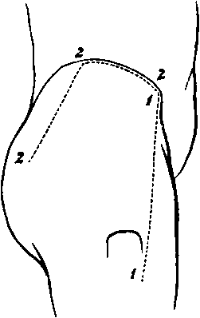

A Dissection To Expose The Gluteus Minimus Muscle
Description
This section is from the book "A Manual Of Dissections Of The Human Body", by R. E. Carrington. Also available from Amazon: A manual of dissections of the human body.
A Dissection To Expose The Gluteus Minimus Muscle
Position
The body lying on its face, the Abdomen and the Pelvis raised on blocks, and the legs hanging down to a moderate degree.
I. Skin Incisions
1. From the anterior-superior Iliac spine to the anterior-inferior angle of the great Trochanter.
2. From the upper end of No. 1, along the anterior two thirds of the Iliac crest, and then downwards and backwards to a point three inches below the posterior-superior Iliac spine.
Reflect the flap downwards, and expose the loose fascia of the buttock, containing—
1. The posterior branches of the External Cutaneous nerve most anteriorly.
2. The Lateral Cutaneous branch1 of the last Dorsal nerve, crossing the Iliac crest, and running as far as the Trochanter major.
No. 20.
3. The Iliac branch of the Ilio-hypogastric nerve1 posterior to this.
4. The external branches of the posterior primary divisions of the first three Lumbar nerves, crossing the Iliac crest still further inwards.
5. The external branches of the posterior primary divisions of the first two Sacral nerves,—the upper one near the Iliac crest, the lower giving filaments over the lower part of the surface exposed.
1 These nerves bear an inverse ratio to one another as to their size.
II
Remove the preceding structures and expose—
The fascia lata forming externally the Ilio-tibial hand, above covering the Gluteus medius muscle, and dividing to enclose the Gluteus maximus muscle.
III
Remove the fascia covering the Gluteus maximus, and reflect this muscle inwards, by dividing the upper part of its fascial insertion and the fleshy fibres, in a line corresponding to the lower margin of the reflected skin. In doing this— a. The Superficial branch of the Gluteal artery will be divided.
b. The Inferior Gluteal branches of the Small Sciatic nerve will be cut, with arteries from the Sciatic.
c. Branches to the reflected muscle from the part of the Sacral plexus formed by the first and second nerves will be seen, c. The bursa over the great Trochanter, and the Vastus externus muscle will be opened. Divide the Tensor vagina femoris muscle at its origin, and hook it well forwards, cutting the branches supplying it from the Gluteal artery and nerve.
There will now be exposed, from above downwards:—
1. The Gluteus medius muscle.
2. The Pyriformis muscle.
3. The Gemellus superior muscle.
4. The Obturator internus muscle.
5. The Gemellus inferior muscle, at its insertion.
6. The Vastus externus muscle on the outer side.
7. The Trochanter major, below and externally.
8. Beneath the Tensor vagina muscle is an anastomosis between the Gluteal, External Circumflex, and Circumflex Iliac arteries. 9. The divided Superficial branch of the Gluteal artery and vein above the Pyriformis muscle.
10. The Sciatic artery and vein emerging below the Pyriformis muscle.
11. The Pudic artery, vein, and nerve, leaving the Pelvis at the same spot; the artery giving a branch to the Digital fossa.
12. The Great and Small Sciatic nerves are seen below the muscle.
13. The nerve to the Obturator internus muscle is seen crossing the spine of Ischium, usually having the Pudic artery to its inner side and the Pudic nerve still more internal.
14. The small nerve to the Gemellus superior muscle may be seen by pulling outwards the Great Sciatic nerve.
IV
Cut through at their origins and insertions, the Gluteus medius, and Pyriformis muscles, and remove them.
Branches of the Gluteal artery and nerve will be divided in taking away the former muscle.
1. The Gluteus minimus muscle will now be fully exposed, and lying upon it the Gluteal nerve and Deep branch of the artery of the same name. Each divides into an upper and lower branch, the former of which runs along the upper margin of the muscle, the latter crosses it, passing downwards and outwards ; the nerve to supply the Tensor vaginæ femoris muscle, and the artery to join in the anastomosis previously mentioned. The Great Sciatic nerve may be required to be pulled inwards a little from off the muscle.
2. All the structures previously mentioned as leaving the Pelvis below the Pyriformis muscle will be more fully seen, and in addition.
3. The Pelvic fascia on the deep surface of the Pyriformis muscle.
Continue to:
- prev: A Dissection To Expose The Profunda Femoris Artery
- Table of Contents
- next: A Dissection To Expose The Popliteus Muscle